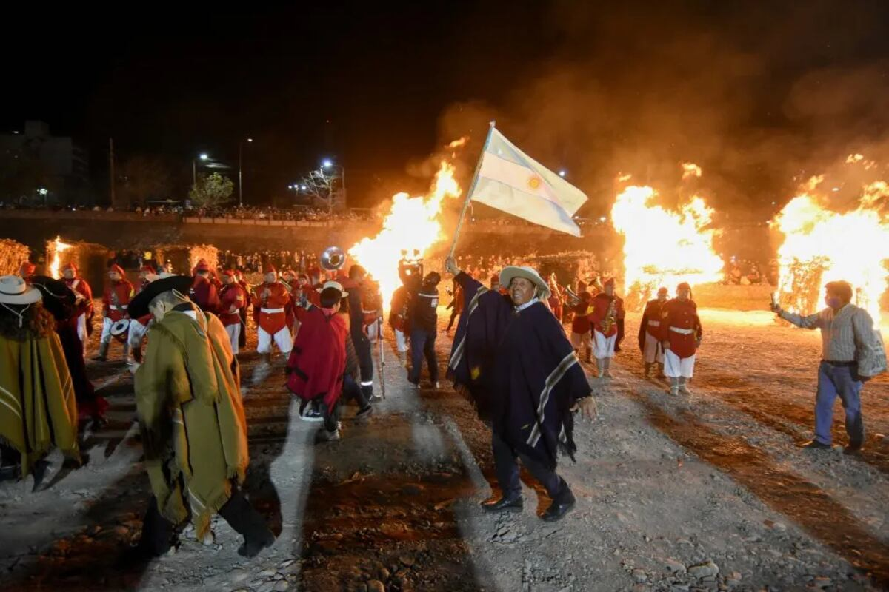
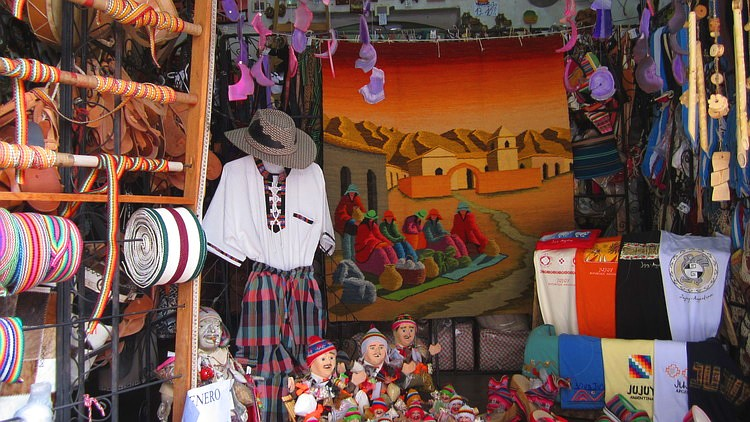
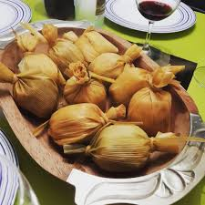
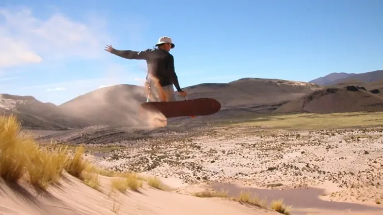

Serranías del Hornocal: El gigante de 14 colores
Un viaje a 4.761 metros sobre el nivel del mar que desafía los sentidos.
Leer crónica →
Un viaje a 4.761 metros sobre el nivel del mar que desafía los sentidos.
Leer crónica →
La bajada del Carnaval de Tilcara contada desde adentro.

Carne cortada a cuchillo, papa y el toque jujeño.

Trekking y fotografías surrealistas en la Puna.

Entrevista a los copleros que mantienen viva la tradición.

Visitamos las bodegas más altas del mundo.

Recorrido histórico por la antigua fortaleza omaguaca.

El sacrificio de un pueblo para asegurar la independencia.

¿Dulce o Salada? Recorremos Humahuaca buscando la respuesta.

El tejido jujeño, una tradición de generaciones.

Un clásico de la cocina andina para los días fríos.

Sandboard extremo en la capital del Altiplano.
¿Tienen datos de cuándo hay menos nubes para hacer astrofotografía en las Salinas? ¡Tremenda nota!
La humita de Humahuaca no tiene competencia, pero prueben los tamales de la feria de Purmamarca... ¡un viaje de ida!
Hice el trekking al Pucará la semana pasada. Recomiendo ir temprano por el sol, ¡la vista desde arriba es de otro planeta!
¿Se necesita guía sí o sí para subir al Hornocal o se puede ir por cuenta propia? Muy buena la info del blog.
Como jujeño viviendo afuera, leer esto me hace extrañar un montón. ¡Gracias por mostrar así mi provincia!
Excelente nota sobre el Hornocal, Cristian.